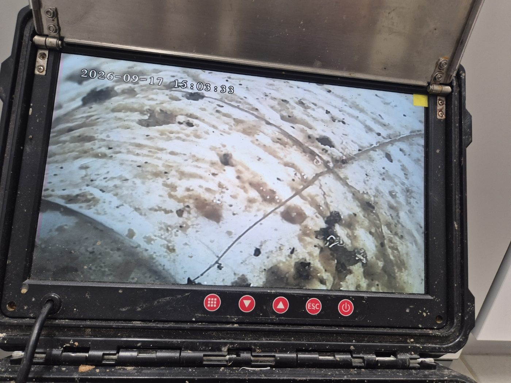
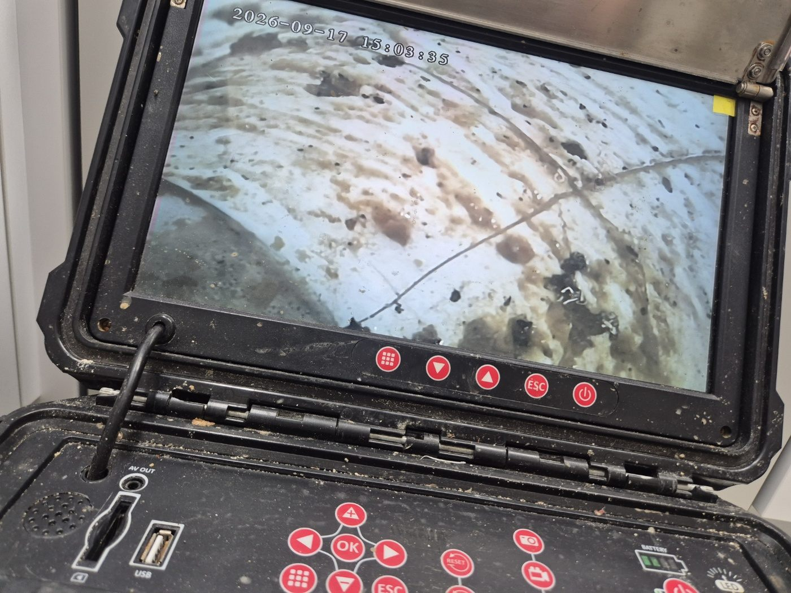

현장 상황
평택시 죽백동에서 배수가 원활하지 않고 누수 가능성도 있어 하수구 내시경 검사를 진행한 현장입니다. 막힘과 누수가 함께 의심될 때는 막힌 곳만 뚫어서는 해결되지 않을 수 있어서 배관 안쪽 상태부터 확인합니다.
내시경 카메라로 배관 내부 확인
작은 카메라를 배관 안으로 넣어 모니터로 내부 상태를 직접 확인했습니다. 배관 벽면에 이물질과 찌든 때가 불규칙하게 붙어 있는 모습이 확인됩니다.


균열 확인
배관을 따라 더 들어가자 벽면에 가는 선처럼 보이는 균열이 확인됐습니다. 이물질로 막힌 구간과 균열이 있는 구간이 함께 있으면 배수 불량과 누수가 동시에 나타날 수 있습니다.

작업 순서
이물질이 쌓여 막힌 구간은 먼저 제거해 배수를 정상화하고, 균열이 확인된 구간은 별도로 보수하는 순서로 진행합니다. 작업 후에는 다시 내시경으로 배관 안쪽을 확인해 이물질과 균열 부위가 정리됐는지 확인합니다.
내시경 검사로 알 수 있는 것
내시경은 배관을 뜯지 않고 안쪽의 이물질, 균열, 이음부 어긋남을 직접 보여줍니다. 막힘만 뚫고 끝내면 균열이 남고, 균열만 고치면 막힘이 남을 수 있어서, 작업 전후로 같은 화면을 비교하면 어디까지 해결됐는지 확인할 수 있습니다.
마무리
하수구가 잘 안 내려가면서 바닥까지 축축하다면 단순 막힘이 아닐 수 있습니다. 내시경으로 안쪽을 정확히 확인한 뒤 막힘과 누수를 순서에 맞게 조치해야 재발을 줄일 수 있습니다.
평택 죽백동에서 배수가 안 되면서 바닥이 축축한 증상이 있으시면 편하게 문의해 주세요.
접수 안내
비슷한 증상으로 문의하실 곳을 찾고 계신다면 전화로 접수해 주세요. 접수 건은 확인 후 신속하게 연결해 안내해 드리며, 현장 진단 후 견적에 동의하신 뒤에만 작업이 진행됩니다.